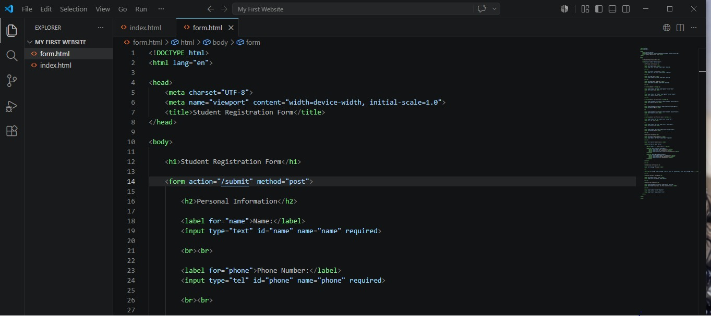
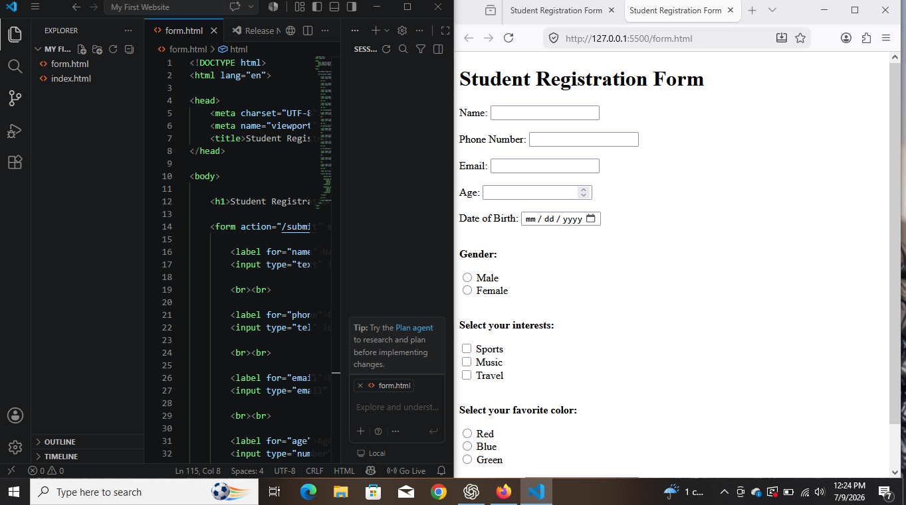
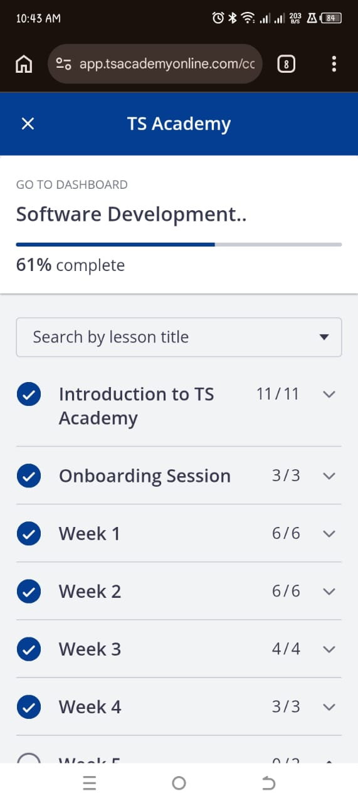
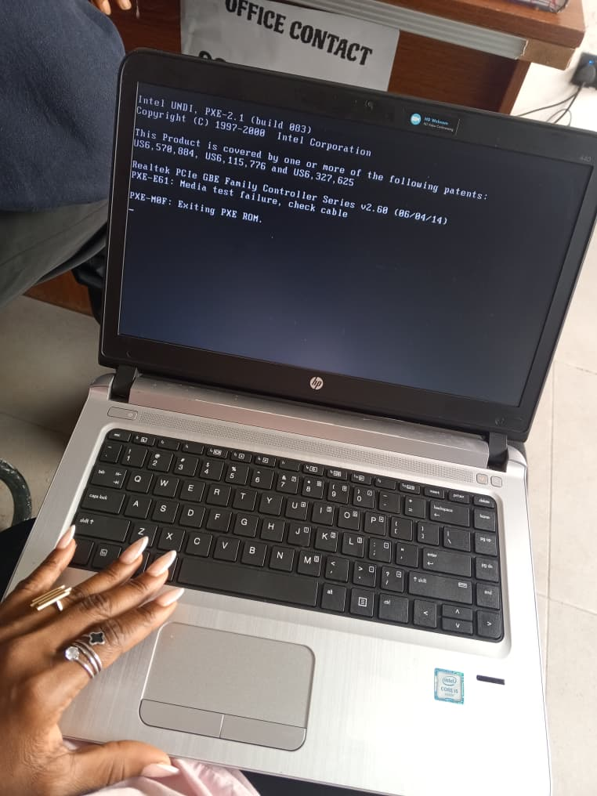

My Journey in Pictures
Every project, study session and milestone represents another step toward becoming a Software Developer. These moments remind me that growth comes through consistency and continuous learning.
Professional Profile
My professional profile photo as I begin my journey into software development.
HTML Form Project

This project helped me understand HTML forms, text fields, radio buttons, checkboxes, drop-down menus and submit buttons.
HTML Form Project

Here I learnt more on how to create HTML Forms, making forms easy to fill out and submit.
Learning Progress

This image represents my progress as I continue learning through TS Academy. Every completed lesson brings me closer to achieving my career goals.
Study Setup
My study setup is where ideas become projects. It is the place where I practise coding, complete assignments and continue building my skills.
Learning with My Laptop

My laptop has become one of my most valuable learning tools. It allows me to practise coding, research new concepts and create projects every day.
Personal Growth
Learning technology has strengthened my confidence, patience and determination. Every challenge I overcome motivates me to keep moving forward.
Looking Forward
This is only the beginning of my journey. I look forward to building more projects, earning certifications and growing into a skilled Software Developer and Virtual Assistant.